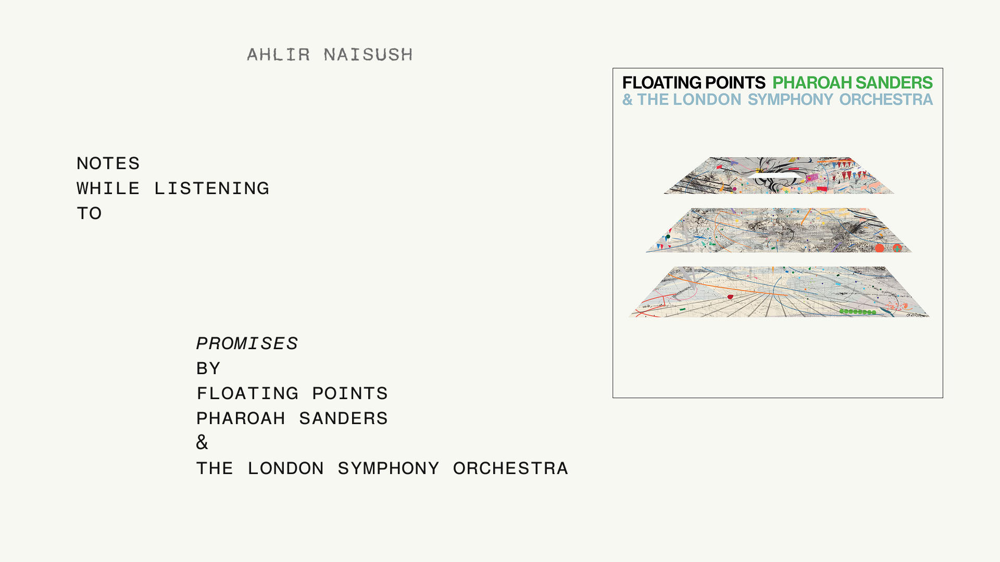

Notes while listening to Promises by Floating Points, Pharoah Sanders & The London Symphony Orchestra

I tend to write notes (on paper) while listening to music albums. These albums can be the ones that I am listening to for the very first time or revisiting for the nth time. I do this as a form of meditation, trying to articulate and record my spontaneous feelings while listening to the record without any distractions. I digitize these hand-written notes later, publishing them on my website for archival purposes.
Presently, these are my reflections while listening to the collaboration album between Floating Points, Pharoah Sanders & The London Symphony Orchestra titled Promises. I was listening to this album in its entirety for the first time.
Movement 1
Love these repeating notes with light variations. Very evocative, feels like snapshots of leaves moving with the wind.
Sanders with the saxophone... brilliant.
The notes keep repeating, wow, being used as the foundational layer for Sanders to do his thing here.
Post the half way point and this atmosphere feels ethereal.
Movement 2
Transitions seamlessly into movement 2 (this is a singular piece after all). The notes, the motif of this composition continue, now surrounded by delicate strings and as soon as I write that - Sanders is back again.
Movement 3
It is almost like waves... gentle waves.
Movement 4
The soundscape almost gets faded away entirely and now it is kept alive by these vocals. That is Sanders ?
The saxophone is now back in the picture.
I didn't realize movement 4 started, I have been writing this thinking it was still M3.
Movement 5
I love the ending of movement 4 and the beginning of movement 5.
It feels like it has reached or is reaching, no, rather climbing towards a sonic crescendo.
There is so much going on but the motif stays ever present and slightly evolving, its brilliant.
I love Sanders's work here, it really elevates the whole atmosphere and the way he plays the saxophone is so interesting and tense. So much personality in that segment.
Again, all the extra layers disappear and the recurring notes become prominent and are left isolated from the rest.
Movement 6
Sanders fades in and out of this entire composition, you kinda expect and anticipate his presence.
This is distinctively the orchestral portion of the piece, they have been present since the beginning, but they have been given center stage now.
So far within this movement alone it has transitioned from ambient to jazz to cinematic.
The motif is so diminished in front of these trembling, pulsating strings. This feels like the musical equivalent of being alive.
Wow... they just dropped the intensity.
Movement 7
We are back to a softer atmosphere.
Yeah my analogy of this representing waves is partially correct, I am painting half the picture there. Movement 6 was like a storm and this is the calm after that.
I prefer this meditative rhythm. Light tonal shifts. But to appreciate this you have to face that explosion in the previous movement.
Like a ship that braved the sea in the darkest of nights getting to drift silently under the presence of the rising sun.
Oh now it feels spacey, like that ship gets to witness different planets... I don't even know what that means, but that's the visual I am getting.
It stealthily built itself up to a separate crescendo, this one doesn't feel like an explosion. It feels like spaceship drifting away from possible observation. A goodbye of sorts and it has left you with the cold emptiness of the mesmerizing space.
Movement 8
Residual existence from the previous movements. I hope this continues and leads to a gradual fade.
Peace.
Serenity.
Tranquility.
Solitude.
It did lead to a gradual fade, but the organ resurrected it.
The organ trembled, almost grasping for air then drowned. This was like a funeral for that spaceship.
Organ is back again............. and now it is gone, that was a sharp, abrupt cut.
That felt like a finale. There is just some ambient noise left now.
Movement 9
End credits to a movie.
Those STRINGS!
I think this feels a little out of place. Movement 8 had closed this composition flawlessly and now this feels unnecessary. This movement just had that one shriek of strings before dropping back to silence again.
I also think the recurring notes that were so foundational to the rest of the story here - the anchor of sorts - were absent from the last movement along with Sanders's Saxophone which should have been forefront to close it.
You could spin a story to that though, like a promise that was never kept.
Conclusion
That was special.
Enchanting.
Mesmerizing.
All the other adjectives.
Meditative.
Relaxed, but alive.
Ambient, but interesting.
Beautiful.
I think movement 9 extended this piece unnecessarily, it could have been a better 'Final-Bow' than what it was without it. But it doesn't matter in the grand scheme of things and this album is GRAND indeed. So spacey, so picturesque.
Movement 1, 2, 3, 4, 5, 7 & 8 were my favorites, but I do think the best way to experience this music is to listen to it in its entirety, jumping between the movements won't provide the complete context.
Those recurring notes are just perfect, so well composed and arranged. I learned that Floating Points is responsible for those and I might have to check some of his other works.
Credits
Promises by Floating Points, Pharoah Sanders and the London Symphony Orchestra.